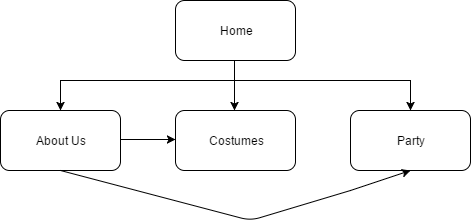

Name: Christian Louis Tan Choachuy
Login: jc335075
The main goal of this website is to improve CossiePlay’s business. Business is good, but by having a website, CossiePlay will have increased exposure and network. Consequently, this will increase their demand and their market, and business will be even better. Furthermore, the website aims to increase the age range of CossiePlay’s customers, as currently, most customers are of age 35-50. Thus having this website will do just that, as more people will know about them (specially the teens and young adults because now is the “internet age”). Ultimately, more people will be going to their parties (young and old), and business will improve accordingly.
The website's success can be evaluated by how much of the client's goals were fulfilled. The main purpose of the site was to increase the exposure of CossiePlay and to attract more customers (young and old), thus, keeping the objective of making a goal driven site in mind, I believe I have made the site capable of doing exactly that.
The target audience is mainly the teens and young adults as CossiePlay wants to increase their range of clients. That is why I have made the site simple and not too flashy with a lot of different colors and such. Furthermore, I have used and placed the pictures meticulously in places where they would look appropriate and nice.
Moreover, I have made sure to emphasize the “party” segment as I am sure that this would be eye catching and attractive to the said target audience. Finally, I have put less words into the site and tried my best to summarize the paragraphs yet retain all the points because a lot of words are not attractive and most teens and young adults would get easily bored.

username: christianchoachuy
repo: 1406-cossieplay